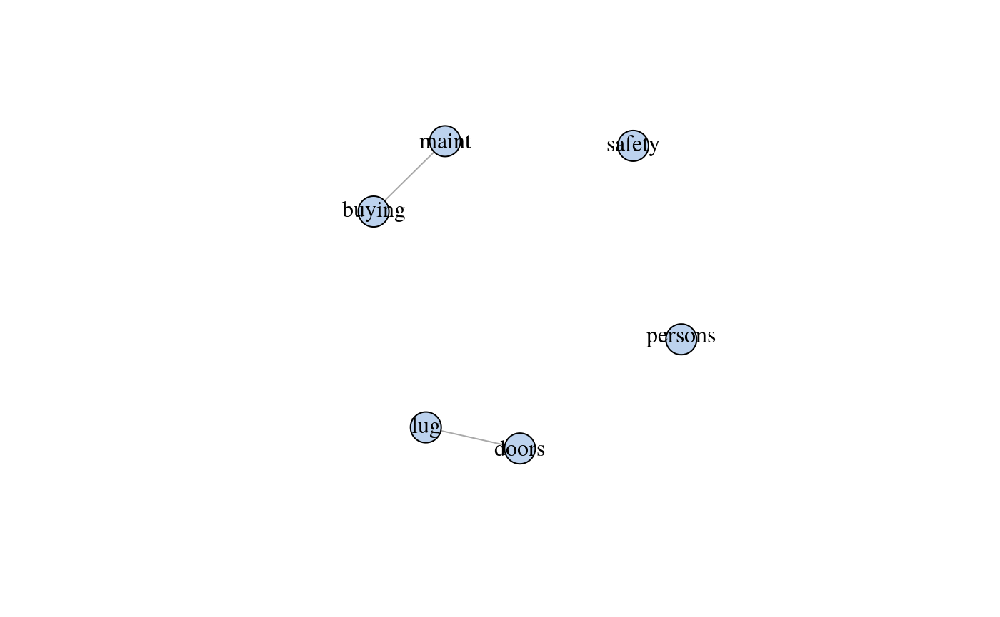
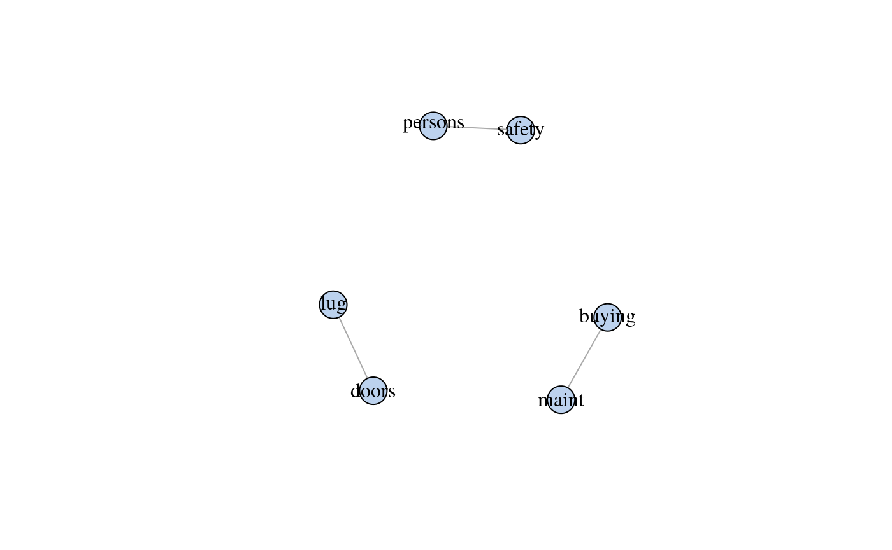
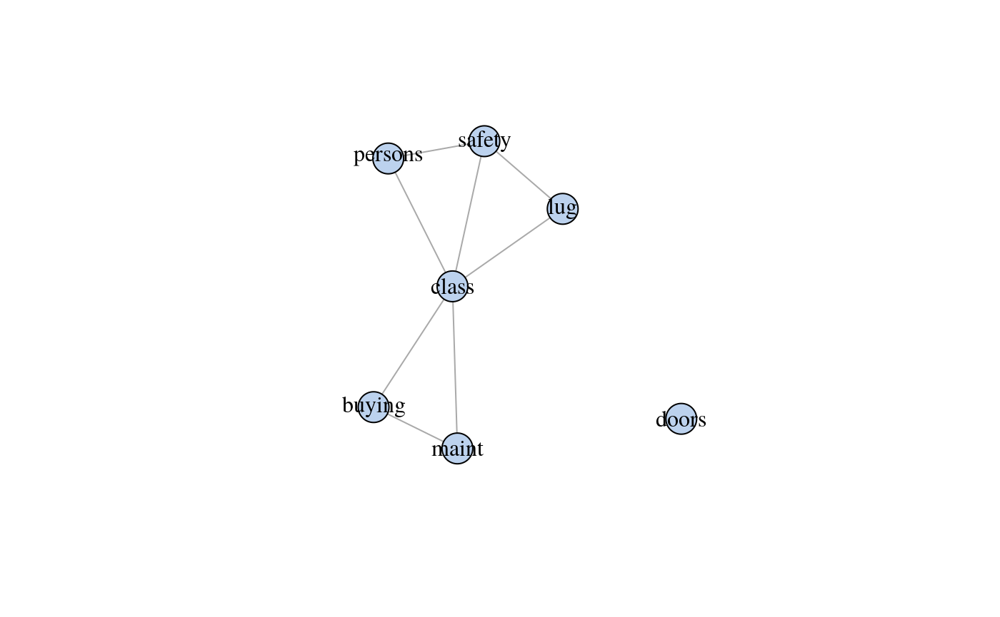

About molic
An R package to perform outlier detection in contingency tables using decomposable graphical models (DGMs); models for which the underlying association between all variables can be depicted by an undirected graph. molic also offers algorithms for fitting undirected decomposable graphs. Compute-intensive procedures are implementet using Rcpp/C++ for better run-time performance.
Getting Started
If you want to learn the “behind the scenes” of the model it is recommended to go through The Outlier Model and look at the documentation as you read along. See also the examples below and the software paper.
You can install the development version of the package by using the devtools package:
devtools::install_github("mlindsk/molic", build_vignettes = FALSE)How To Cite
- If you want to cite the outlier method please use
@article{lindskououtlier,
title={Outlier Detection in Contingency Tables Using Decomposable Graphical Models},
author={Lindskou, Mads and Svante Eriksen, Poul and Tvedebrink, Torben},
journal={Scandinavian Journal of Statistics},
publisher={Wiley Online Library},
doi={10.1111/sjos.12407},
year={2019}
}- If you want to cite the molic package please use
TBAExample - Outlier Detection
To demonstrate the outlier method we use the car data set from the UCI Machine Learning Repository. The data have \(4\) classes that labels the evaluation of a car; unacceptable, acc, vgood and good. These classes are determined by the other variables in the data - and theses are not necessarily independent of each other and we must therefore “fit their association”.
Reading Data
library(dplyr)
car <- read.table("https://archive.ics.uci.edu/ml/machine-learning-databases/car/car.data",
header = FALSE, sep = ",", dec = ".") %>%
as_tibble() %>%
mutate_all(as.character)
colnames(car) <- c("buying", "maint", "doors", "persons", "lug", "safety", "class")Fitting an Interaction Graph
The efs algorithm is a forward model selection algorithm. This means, that the algorithm starts from the null-graph with no edges and keep adding edges until a stopping criterion is met. We fit the interaction graph for the vgood cars and plot the result.
G_vgood <- fit_graph(vgood_cars, q = 0.5, trace = FALSE) # AIC (q = 0) and BIC (q = 1)
plot(G_vgood)
For comparison we also fit the interaction graph for the unacc_cars

It is apparent that very good cars and unacceptable cars are determined by two different mechanisms.
Outlier Test
We randomly select a car from the unacc_cars data and test if it is an outlier in vgood_cars.
set.seed(7)
z <- sample_n(unacc_cars, 1) %>% unlist()
M <- fit_outlier(as.matrix(vgood_cars), z, adj_lst(G_vgood))
#> Note: A has values larger than a single character. to_single_chars() was used to correct this
M
#>
#> --------------------------------
#> Simulations: 5000
#> Variables: 6
#> Observations: 66
#> Estimated mean: -16.22
#> Estimated variance: 0.78
#> ---------------------------
#> Critical value: -15.57848
#> Deviance: -3.350997
#> P-value: 0
#> Alpha: 0.05
#> <outlier, outlier_model, list>
#> --------------------------------Thus the car is declared an outlier on a \(0.05\) significance level. We can visualize this by plotting the corresponding density of the deviance statistic as
pmf(M)
and verify that the estimated deviance of the selected car is -3.3509971 which is smaller than the critical value of -15.5784775.
Example - Variable Selection
The fit_graph procedure can be used as a variable selection tool. The idea is, to fit an interaction graph with the class variable of interest included. The most influential variables on the class variable is then given by the neighboring variables. Lets investigate which variables influences how the cars are labelled.

So the class of a car is actually determined by all variables except for doors (the number of doors in the car). The neighbors of class can be extracted as follows
adj_lst(G_car)$class
#> [1] "safety" "persons" "buying" "maint" "lug"We can also state e.g. that the safety of a car is independent of the price (the buying varible) when the class of the car is known; this phenomena is also known as conditional independence.